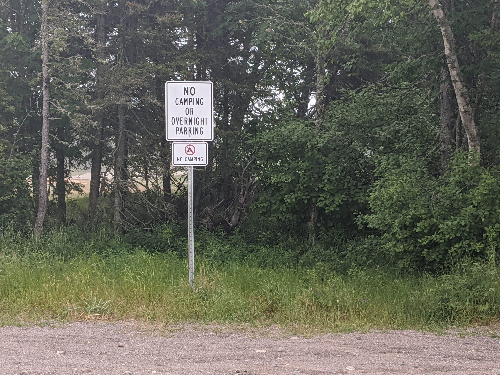

It's winter in New Orleans, the weather is cool and the nights are long. It's the best time of the year to enjoy the outdoors, without the heat, humidity and mosquitos. Tonight is just beckoning a campfire with s'mores and scary stories.
You and your best friends decide to go to City Park to do some urban camping. You pack up some basic supplies, and drive over.
As you park you see a sign posted:
